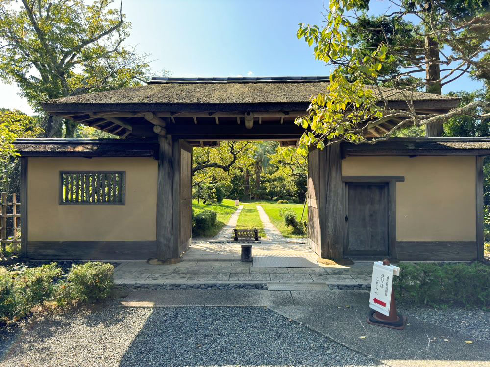
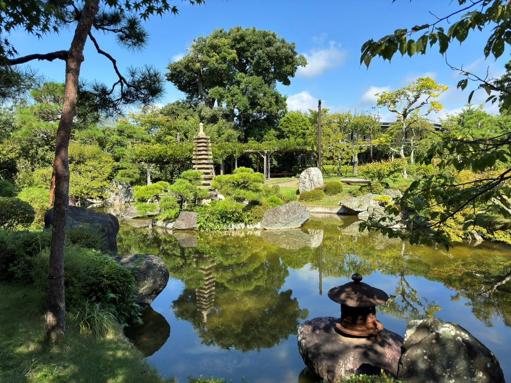
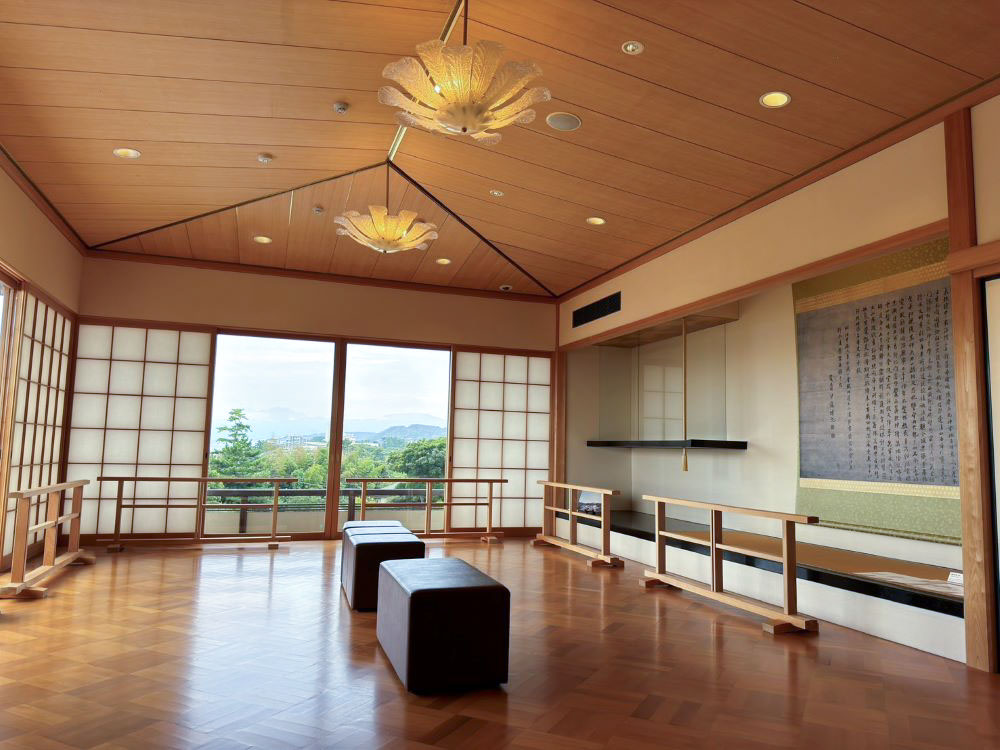
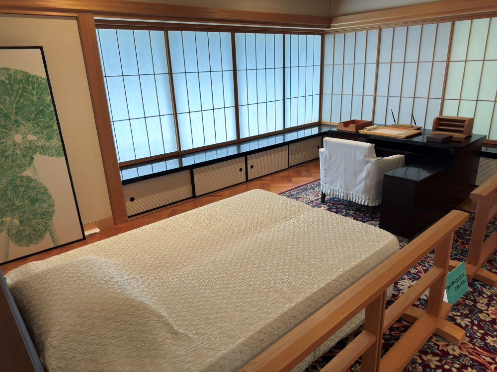
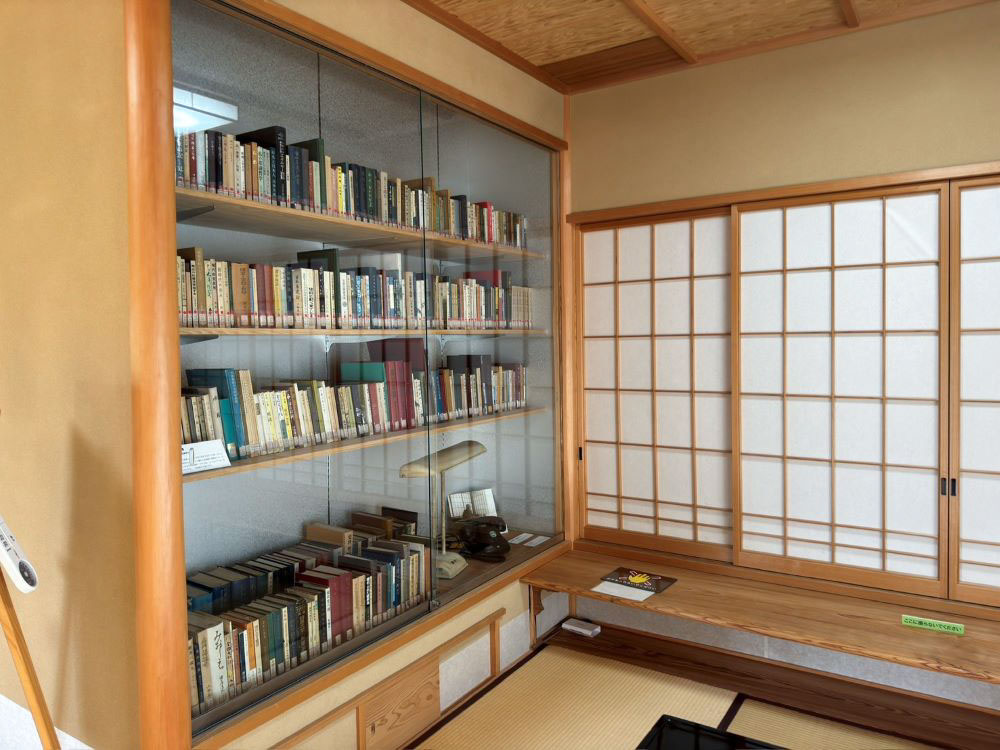
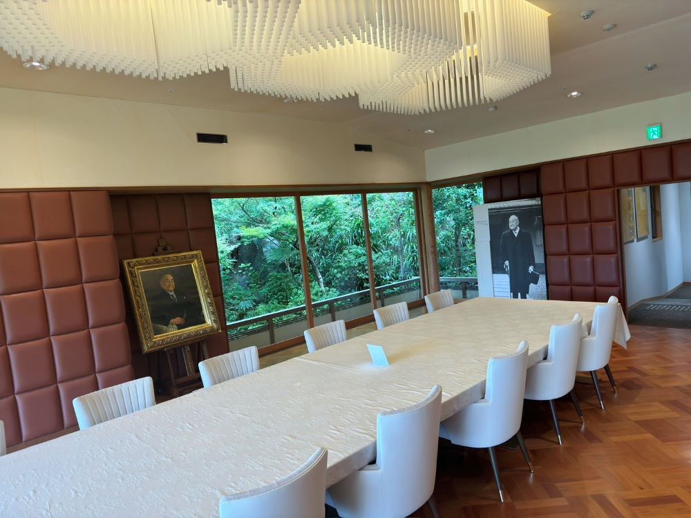
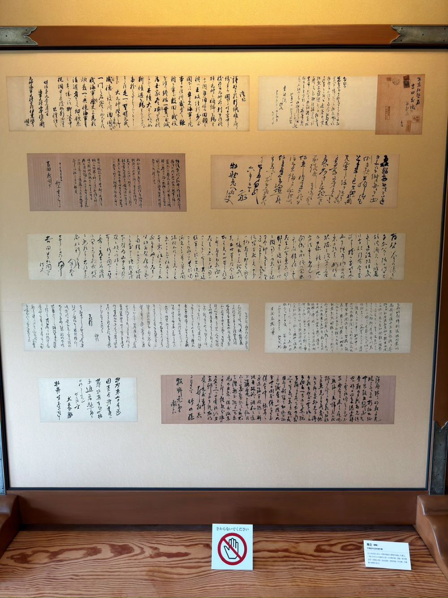
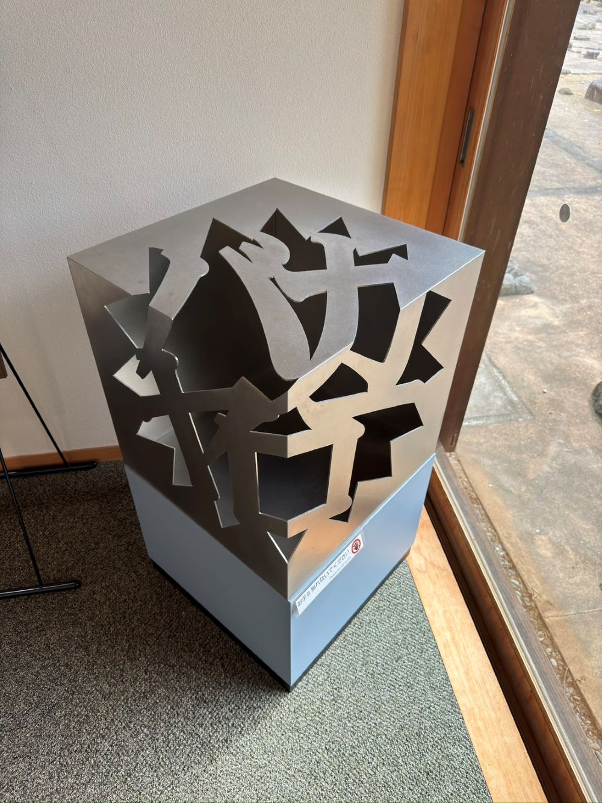
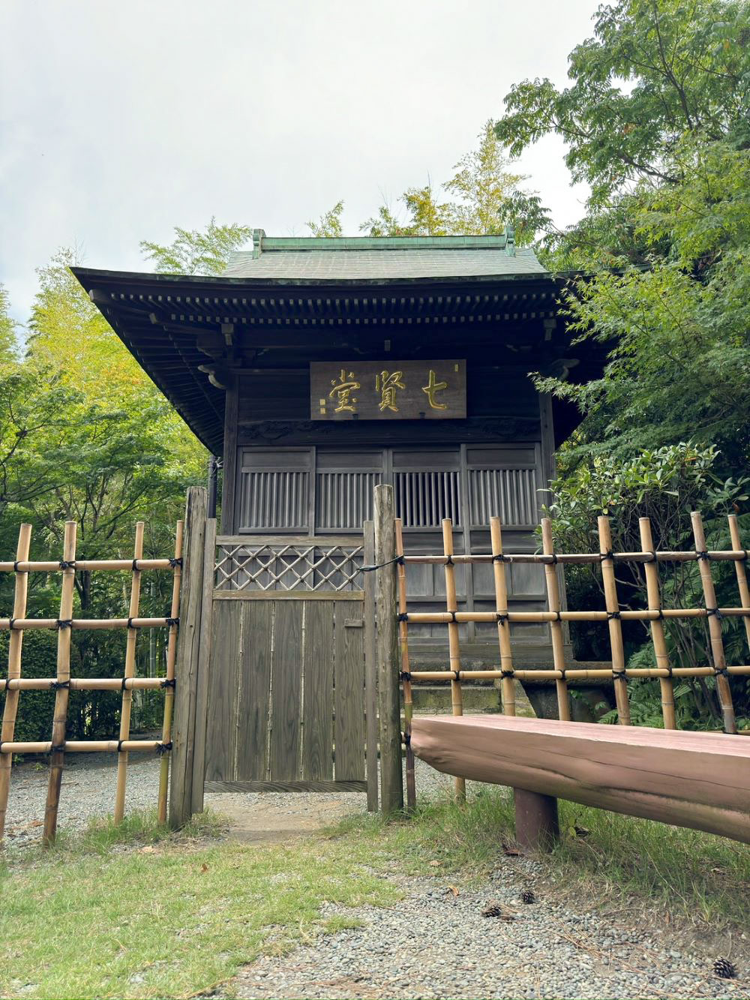

旧吉田茂邸
旧吉田茂邸は、戦後の内閣総理大臣を務めた吉田茂が昭和20年頃からその生涯を閉じるまで過ごした邸宅。元西独首相アデナウアー氏や、当時の皇太子殿下と同妃殿下などの国内外の要人が招かれ、「大磯詣」と言われていた。2009年3月22日に発生した火災により、本邸が焼失してしまったが、県と町が再建事業に係る基本協定を締結し再建工事が進められ、2016年に一部を除いてほとんどの復元が完了されました。近代数寄屋建築で有名な吉田五十八の設計による部分が多くを占めており、アール・デコの要素を取り入れた直線的な建物の外観や、モルタル塗り廻しの大壁といった近代的な素材を利用した和風建築など、数多くの吉田五十八の手法が随所にみられます。
{kind=link}
フォトギャラリー
-

- 中門（兜門）
- 講和条約門ともいわれ、サンフランシスコ講和条約の締結を記念して造られた。京都の裏千家今日庵の門を写したもので、軒先の形状が兜に似ていることから「鬼門」とも呼ばれ、国登録有形文化財に登録されています。
-

- 日本庭園（心字池と石塔）
- 1961年に世界的作庭家・中島健氏と日本庭園研究家・久恒秀治氏によって設計され、吉田茂邸に向かう亀の姿をイメージした亀島と背中に石像十三重塔を背負っています。
-

- 居間「金の間」
- 資答をもてなす応接間として使われ、箱根連山や富士山、相模湾が一望でき、吉田はこの部屋から毎日のように富士山を眺めていたそうです。天井板は、板と板の合目に金箔が貼られ、光が当たると金色に輝きます。
-

- 寝室「銀の間」
- 天井一面に銀（錫箔）の装飾を施した部屋で、寝室兼書斎として使用していました。この部屋のベッドで吉田茂は生涯を終えました。
-

- 書斎
- 「銀の間」ができるまで執務に使用された和室で、掘り炬燵があり、許可なく入出することはできませんでした。
-

- 食堂「ローズルーム」
- 吉田が食事をしていた部屋。別名ローズルームとも呼ばれ、アール・デコ調の意匠を取り入れたデザインとなっています。
-

- 衝立
- 主に吉田茂と岳父・牧野伸顕宛の書簡を表装した衝立。他にも西園寺公望や原敬、犬養毅などの書簡が並んでいる。
-

- 言葉のオブジェ「バカヤロー」
- 衆議院予算委員会の質疑応答中の吉田茂による「バカヤロー」という発言によって衆議院が解散したことが有名ですが、実際は小さくつぶやいた言葉をマイクが拾ってしまっただけである。豪傑な性格がゆえにマイナスのイメージを持たれることが多いが、吉田茂の平和に対する強い「思い」を知ってもらうために制作されました。
-

- 七賢堂
- 伊藤博文の自邸「滄浪閣」に建立されたものです。はじめは、岩倉具視・大久保利通・三条実美・木戸孝允の4人が祀られた「四賢堂」でありましたがその後、伊藤博文が祀られた際に吉田がこの地に移設し、西園寺公望と吉田茂本人が死後に合祀され「七賢堂」となりました。
{kind=link}
{kind=link}
{kind=link}
{kind=link}
{kind=link}
{kind=link}
{kind=link}
{kind=link}
{kind=link}
アクセス
【住所】〒255-0005 中郡大磯町西小磯418
【電話】0463-61-0355
【開館時間】9時00分～16時30分
【休館日】月曜日・毎月1日・年末年始（12月29日～1月3日）
【アクセス】徒歩でお越しの際：東海道線大磯駅から徒歩（約30分）
バスでお越しの際：「城山公園前」下車、徒歩（約5分）